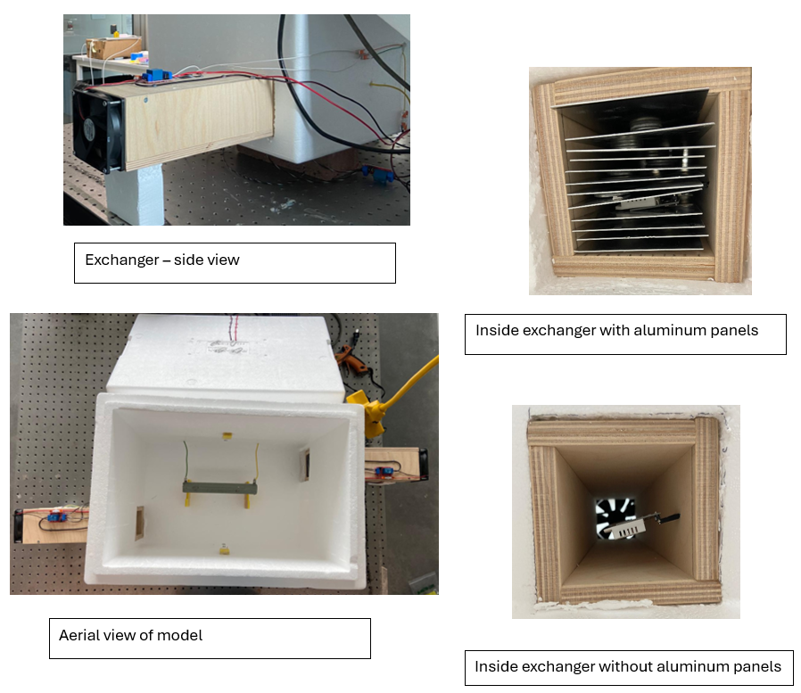

# the kangaroo rat
# ---------------------------------
the kangaroo rat is a small rodent that lives in desert climates, meaning it is exposed to extreme climates and needs to be extremely energy efficient and preserve water and heat in its body. one of the adaptations this animals has made is that the kangaroo rat's nasal passages function as a counter-current heat exchanger. when the rodent exhales, the walls of the nasal passage absorbs and stores the heat and moisture from the exhaled air. then, when the rodent inhales, the air reabsorbs the heat and moisture from the walls of the nasal passages. this reduces the need to warm and humidify inhaled air using metabolic heat, allowing the kangaroo rat to recover a whopping 83% of water, and preserve 88% of heat lost due to breathing.
# the nosehouse
# ---------------------------------
steven vogel thought - "kangaroo rats need to preserve a warm humid interior against a cool dry exterior, just like most buildings in cool, dry environments do. maybe we can apply the biological principles of a kangaroo rat to modern buildings!". just kidding, i have no insight into the (brilliant) mind of steven vogel, so this is all just inference. however, i have read his paper, "nosehouse: heat-conserving ventilators based on nasal counterflow exchangers". vogel constructed this, "nosehouse", where he replicates the upper respiratory tract of a kangaroo rat to ventilate and thermoregulate an enclosed space, such as a modern building, in an energy efficient manner.
# the model
# ---------------------------------
this summer, with the help of dr. golnar gharooni-fard and professor mahadevan, i built the model that vogel had built in his paper using a foam cooler, and fitted it with exchangers made of wood, axial fans, and aluminum panels. the system includes a heater and fan for thermoregulation and ventilation as well, and six sensors to measure temperature and humidity at different points within the model. these components make up a circuit that controls the loads' operations through relays and collects temperature and humidity data through a microcontroller.

# the plan
# ---------------------------------
in addition to the passive mechanisms of the current model, i am hoping to implement active mechanisms that would allow the system to control the internal environment based on the ambient temperature. i am currently researching the current literature on biomimetics and various biological principles to explore these possibilities. however, i am not sure i will have enough time to explore, research, design, and implement an active mechanism for this model in the time i have for this class. instead, i will first focus on making my model of vogel's "nosehouse" function. i am currently having issues with the circuit and microcontroller, so that will be the first thing i will tackle.
what i can also focus on, is the actual model of the exchanger. currently, the internal functions of the nasal passage are being mimicked in the model by the parallel aluminum sheets. however, nasal functions and morphologies are much more complex than this, and the exchangers can be more complex (providing better energy efficiency and possibly even more control). based on previous research, the exchangers (and noses) are at their most efficient in extreme climates. given the trajectory of global warming and climate change, i think it would be great to figure out how i can customize the exchangers to be at their most efficient at specific extreme climates around the globe. to do this, i will be researching (on my own time, through my term-time research) the nasal morphologies, and other adaptations of the upper respiratory tract of animals that live in extreme climates. based on this, i will figure out how to apply this biomimicry to the exchanger design. then, i will fit the modified exchanger to my model of vogel's nosehouse, and test it in an simulated extreme environment to test how well it functions.
# the final project
# ---------------------------------
a lot of this was a an attempt at a semi-structured brain dump. i will try and reorganize it as i gain more clarity on the timeline and my project! however, for now these are the two things i hope to achieve in this class: get my circuit and my arduino code to work and design 3-5 exchangers specifically for extreme climates somewhere in the world (extreme heat/cold, extreme humidity, cold & dry, warm & dry, warm & humid). i think i will explore using 3d printing to print more organic shapes present in animal morphology, that cannot easily be replicated through mechanical engineering, using the casting machine to also create these organic shapes but with more varied materials to aid conduction and other necessary mechanisms, using the laser cutter to cut and create more precise wood fittings for the exchangers, and using the soldering iron and other circuitry to improve my circuit.